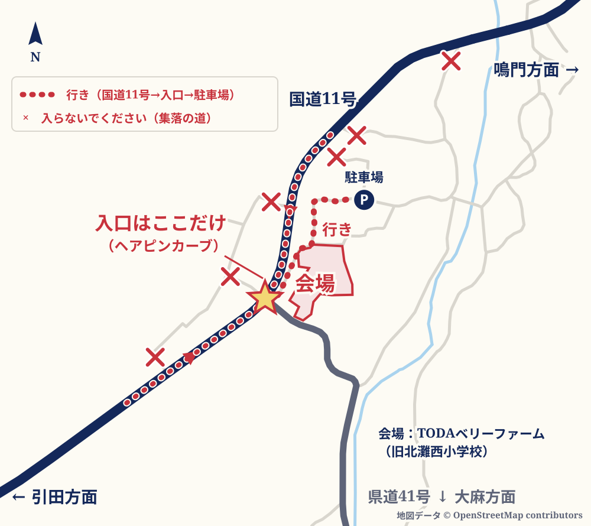
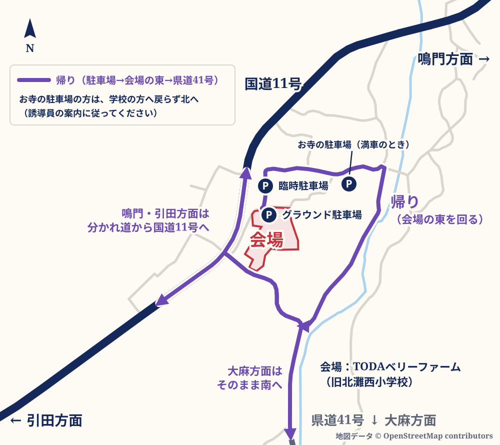

鳴門文化祭 -Berry happy-（NARUTO CULTURE FESTIVAL 2026）


楽しみ方から探す押すと、下の「おすすめの企画」がその企画だけになります
おすすめの企画
ビジュアルは生成したイメージです。当日の会場・装飾・提供内容を示すものではありません。
一日まるごと、楽しもう。
- 10:00
文化祭スタート
遊ぶ、食べる、観る、
気になる企画から楽しもう。 - 17:15ごろ
点灯式・夜の部へ
灯りとともに、
会場の表情が変わります。 - 19:00
文化祭終了
今日の思い出を、
それぞれの日常へ。
各企画の時間割は調整中です。
文化祭の舞台は、旧校舎。
TODAベリーファーム
旧北灘西小学校鳴門市北灘町折野字屋敷64-3 車の入口をGoogleマップで開く
お車でお越しの方へ（大切なお願い）
- 会場への入口は1か所だけです。国道11号の、県道41号との分かれ道（ヘアピンカーブ・下の略図の「入口はここだけ」）から入ってください。
- 国道11号から、入口以外の細い道には入らないでください。地域の方の生活道路で、車どうしがすれ違えません。
- 当日は分かれ道に、案内の看板やスタッフがいます。案内に従ってください。
- カーナビやスマホの地図に住所を入れると、細い道を案内されることがあります。略図の「入口はここだけ」の分かれ道を目指してください。
- お帰りは、グラウンド・臨時駐車場に停めた方は会場の東を回って県道41号へ、お寺の駐車場に停めた方は学校の方へ戻らず北へ出ます（略図の「帰り」）。下の「お帰り」もご覧ください。
- お車で
- 鳴門ICから約30分／引田ICから約15分（国道11号経由）
JR鳴門駅から車で約20分
入口は1か所だけです（下の「大切なお願い」と略図） - バスで
- 徳島バス引田線「鳴門駅前」から「北灘西小学校前」下車、徒歩約2分
- 駐車場
- グラウンド駐車場（約80台）・臨時駐車場（約24台）
いっぱいのときは、お寺の臨時駐車場（約30台）
合わせて約134台です。場所は略図の「P」
当日は9:30〜19:30、警備員が誘導します。案内に従って停めてください
自転車の方は、駐輪場をご利用ください - お帰り
- グラウンド・臨時駐車場に停めた方は、会場の北から東を回って県道41号へ出ます（略図の「帰り」）
大麻方面は、そのまま県道41号を南へ
鳴門方面・引田方面は、県道41号を入口の分かれ道まで戻り、国道11号へ
お寺の駐車場に停めた方は、学校の方へ戻らず、北へお帰りください（学校とお寺の間の道が細いため）
夜は暗くなります。足もとと、歩いている方に気をつけてお帰りください - お手洗い
- 校舎1階と体育館のお手洗いをご利用ください（2階のお手洗いは使えません）
館内の案内図は、下の会場マップをご覧ください。
| 開催日時 | 2026年12月5日（土） 10:00〜19:00 |
|---|---|
| 入場料 | 無料飲食・一部企画は有料 |
| 駐車場 | 3か所・約134台（グラウンド・臨時・お寺）砂利のため、足もとが少し不安定です |
| 雨天 | 開催荒天などで中止する場合は、公式Instagramでお知らせします |

×入らないでください（細い生活道路） …行き（国道11号→入口→駐車場）

━帰り（駐車場→会場の東→県道41号）。お寺の駐車場に停めた方は、学校の方へ戻らず北へ（誘導員の案内に従ってください）
会場マップ
校舎（旧北灘西小学校）の図面から描いた見取り図です。番号を押すと、企画の詳しい案内へ進みます。
1階・外
2階・体育館
昼の部終日運営入れません
お手洗いは校舎1階と体育館をご利用ください（2階のお手洗いは使えません）。
学生ボランティア募集
締切 11月21日（土）- 高校生・大学生が対象。会場装飾、お化け屋敷のスタッフやお化け役、縁日・カフェの準備など
- 事前準備（15時以降。学校終わりもOK）だけ、当日だけの参加も歓迎
- 昼食付き・ボランティア証明書を発行（交通費の支給はありません）
来る前に、知っておきたいこと。
入場料はかかりますか？
入場は無料です。飲食と一部の企画（お化け屋敷など）は有料です。
お支払いの方法は？
当日のお支払いは現金でお願いします。
雨の日でも開催しますか？
雨天でも開催します。荒天などで中止する場合は、公式Instagramでお知らせします。
車で行けますか？ 駐車場はありますか？
会場のグラウンドと臨時駐車場に停められます（いっぱいのときは、お寺の臨時駐車場。合わせて約134台）。鳴門ICから約30分、引田ICから約15分（国道11号経由）です。入口は国道11号と県道41号の分かれ道（ヘアピンカーブ）の1か所だけで、ほかの細い道には入れません。会場・アクセスの略図をご覧ください。
車いすで来場できますか？
会場にはエレベーターがなく、2階のブースとステージイベントには、車いすで上がれる設備がありません。また、駐車場は砂利のため、足もとが少し不安定です。ご不明な点はお問い合わせください。
電車やバスで行けますか？
JR鳴門駅の近くの「鳴門駅前」から徳島バス引田線に乗り、「北灘西小学校前」で降りて徒歩約2分です。
お化け屋敷はいくらですか？ 何時からですか？
参加費は200円です。13:00から19:00まで、幼稚園舎で開きます。17:00からの2時間は「怖さ10倍！」です。
各企画の時間やステージのタイムテーブルは？
決まり次第、このページと公式Instagramでお知らせします。点灯式は17:15ごろの予定です。
ボランティアとして参加できますか？
学生ボランティアを11月21日（土）まで募集しています。申込フォームからお申し込みください。
問い合わせはどこにすればよいですか？
お問い合わせのフォーム・電話・メールからどうぞ。